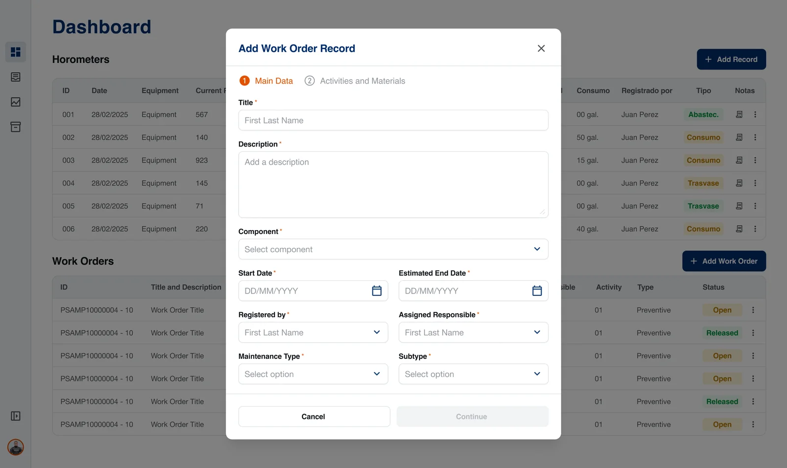
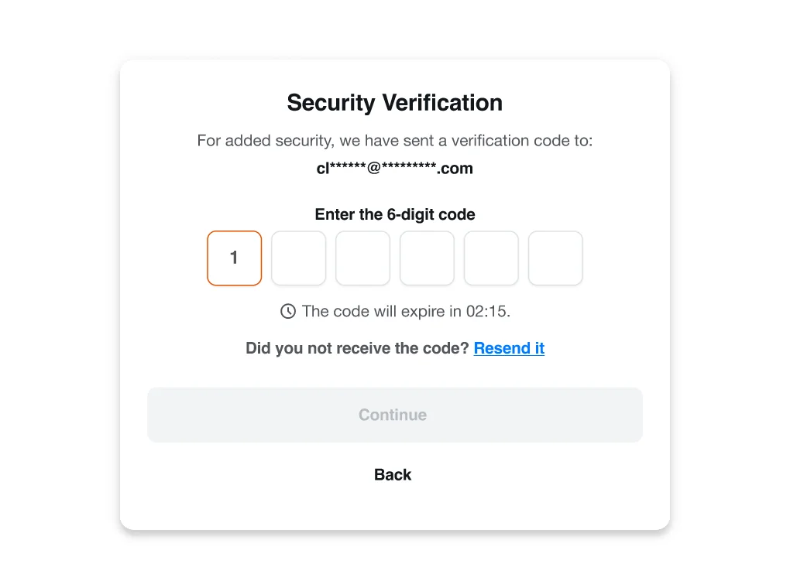
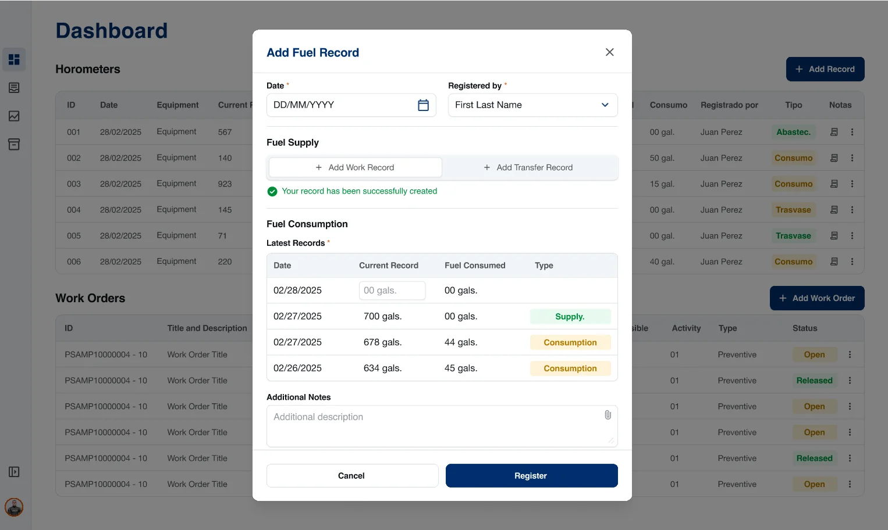

Web platform · Internal tool · 2025Plataforma web · Herramienta interna · 2025
Maintenance PSA
An internal web platform for crews on board vessels to log equipment hour meters, fuel and maintenance work orders, quickly, securely and without data-entry errors. Una plataforma web interna para que las tripulaciones a bordo registren horómetros de equipos, combustible y órdenes de trabajo de mantenimiento, de forma rápida, segura y sin errores de carga.

- The problemEl problema
- Crews had to record hour meters, fuel use and work orders and send them to the company’s systems: data that needed to be easy to enter, accurate and traceable.Las tripulaciones debían registrar horómetros, consumo de combustible y órdenes de trabajo y enviarlos a los sistemas de la empresa: datos que debían ser fáciles de cargar, exactos y trazables.
- What I didQué hice
- Designed the platform end to end (secure login, dashboard, record modals and validation rules), reviewing it weekly with the client and validating it with real users.Diseñé la plataforma de punta a punta (login seguro, panel, modales de registro y reglas de validación), revisándola semanalmente con el cliente y validándola con usuarios reales.
- The resultEl resultado
- A focused, three-screen platform where every record is added from the dashboard. The product was implemented and went live.Una plataforma enfocada de tres pantallas, donde cada registro se agrega desde el panel. El producto fue implementado y salió a producción.
- RoleRol
- UX UI Designer (freelance)(freelance)
- DurationDuración
- ~3 months · 2025~3 meses · 2025
- ClientCliente
- A port services company in PeruUna empresa de servicios portuarios en Perú
- MethodologyMetodología
- Design Thinking
- ToolsHerramientas
- Figma
The contextEl contexto
Maintenance data logged at sea has to be right the first timeLos datos de mantenimiento registrados en altamar tienen que ser correctos a la primera
On board the vessels, crews record how many hours each piece of equipment has run, every fuel supply, consumption or transfer, and the maintenance work orders assigned to a responsible person. That information feeds the company’s maintenance systems and its reports.A bordo, las tripulaciones registran cuántas horas ha operado cada equipo, cada abastecimiento, consumo o trasvase de combustible y las órdenes de trabajo de mantenimiento asignadas a un responsable. Esa información alimenta los sistemas de mantenimiento de la empresa y sus reportes.
The goals: let users record and send this data easily, keep the interface simple and intuitive, guarantee data integrity and traceability, and protect access with two-factor authentication.Los objetivos: que los usuarios registren y envíen estos datos con facilidad, mantener una interfaz simple e intuitiva, asegurar la integridad y trazabilidad de la información y proteger el acceso con autenticación de doble factor.
How I designed itCómo lo diseñé
A small, tightly scoped product, refined in weekly reviewsUn producto pequeño y bien acotado, refinado en revisiones semanales
I worked as a freelance designer through a consultancy, with weekly calls with the client: the first ones were reviews with stakeholders, and the final weeks became validation sessions with the people who would use the platform.Trabajé como diseñadora freelance a través de una consultora, con llamadas semanales con el cliente: las primeras fueron revisiones con stakeholders y las últimas semanas se convirtieron en sesiones de validación con las personas que usarían la plataforma.
- 01
DefineDefinir
The scope was kept deliberately small: three screens (Login, Dashboard, History), a modal for each type of record, and clear validation rules.El alcance se mantuvo deliberadamente acotado: tres pantallas (Login, Panel, Historial), un modal para cada tipo de registro y reglas de validación claras.
- 02
PrototypePrototipar
Starting from an early flow of the screens and modals, I designed the high-fidelity interface in Figma.A partir de un flujo inicial de pantallas y modales, diseñé la interfaz en alta fidelidad en Figma.
- 03
TestTestear
In the final weeks, the design was validated in sessions with real users before implementation.En las últimas semanas, el diseño se validó en sesiones con usuarios reales antes de su implementación.
The solutionLa solución
Everything the crew needs, on one dashboardTodo lo que la tripulación necesita, en un solo panel
Access is protected with a 6-digit verification code, a visible countdown and a resend option. Once inside, the dashboard shows recent hour meters, fuel movements tagged as Supply, Consumption or Transfer, and work orders with an Open or Released status, each table with its own quick action to add a record.El acceso está protegido con un código de verificación de 6 dígitos, un temporizador visible y la opción de reenviarlo. Una vez dentro, el panel muestra los horómetros recientes, los movimientos de combustible etiquetados como Abastecimiento, Consumo o Trasvase y las órdenes de trabajo con estado Abierta o Liberada, cada tabla con su propia acción rápida para agregar un registro.


Data integrityIntegridad de datos
Modals and built-in rules keep records fast, and correctModales y reglas integradas hacen que registrar sea rápido y correcto
Records are added in modals, so users never leave the dashboard. The fuel modal shows the latest records next to the new entry, and the work order form (shown at the top of this page) is split into two steps: main data, then activities and materials.Los registros se agregan en modales, así el usuario nunca sale del panel. El modal de combustible muestra los últimos registros junto al nuevo ingreso, y el formulario de orden de trabajo (al inicio de esta página) se divide en dos pasos: datos principales y luego actividades y materiales.
- 01
Hours only go upLas horas solo suben
A new hour meter reading can’t be lower than the last one recorded.Un nuevo registro de horómetro no puede ser menor que el último registrado.
- 02
No future datesSin fechas futuras
Records can’t be dated ahead, and missing days are filled one day at a time until the target day.No se puede registrar con fecha adelantada, y los días pendientes se completan de uno en uno hasta llegar al día requerido.
- 03
Traceable, never deletedTrazable, nunca eliminado
New work orders always start as “open”, and in the history records can be edited or archived, never deleted.Toda nueva orden de trabajo nace “abierta”, y en el historial los registros se editan o archivan, nunca se eliminan.

Next projectSiguiente proyecto
Contracts & TariffsContratos y Tarifas
Read the case studyLeer el caso de estudio← Previous projectProyecto anterior · All projectsTodos los proyectos
Contact MeContáctame
Let's explore the exciting project you'd like to dive into!¡Hablemos del proyecto que tienes en mente y hagámoslo realidad!